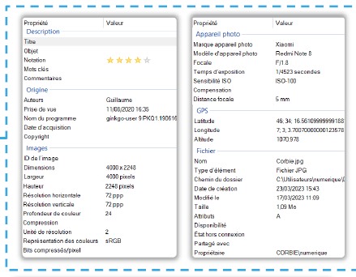
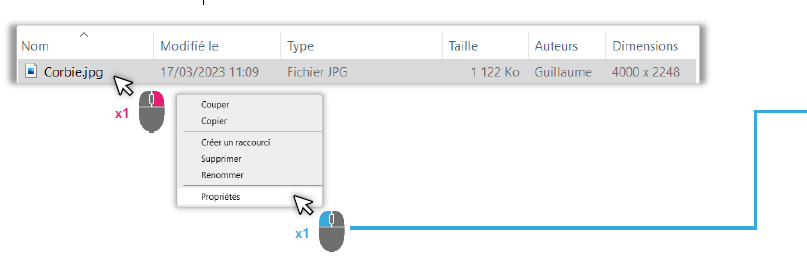

Les métadonnées peuvent être reconnues par les applications installées sur l’ordinateur, sur smartphone ou sur le web.
Ex :
• Affichage sur une carte géographique d’une photo si les coordonnées GPS sont présents.
• Recherche de fichiers sur un ordinateur ou internet